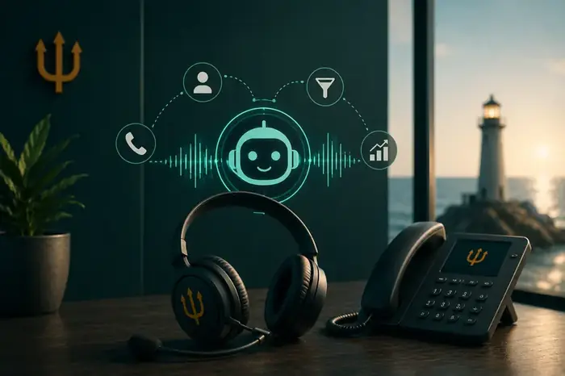

Neptun
Neptun Як підключити
Як підключити Можливості та функції
Можливості та функції Віртуальні номери
Віртуальні номери Інтеграції з CRM
Інтеграції з CRM Тарифи на віртуальну АТС
Тарифи на віртуальну АТС Номери, які підвищують довіру клієнтів
Номери, які підвищують довіру клієнтів Номери з SMS, API та автоматизацією
Номери з SMS, API та автоматизацією Для колл-центрів та вихідних кампаній
Для колл-центрів та вихідних кампанійГлибше про VoIP: рішення,
кейси, інфраструктура

Віртуальна АТС для бізнесу: що це, як працює та навіщо вона відділу продажів
Якщо у компанії вже не один менеджер, десятки або сотні дзвінків на день, кілька рекламних каналів та CRM, звичайного мобільного телефону стає недостатньо.


Як не втрачати лідів через пропущені дзвінки: 7 проблем відділу продажів
Клієнт залишив заявку. Менеджер не відповів. Що робить клієнт? У більшості випадків — телефонує конкуренту.

Автодайлер для відділу продажів: як менеджерам робити більше дзвінків
Знайти номер → скопіювати → вставити → набрати → почекати → почути «зайнято» → записати результат. І так сотні разів. Це не продажі, це ручна робота.

HLR-перевірка номерів: що це та навіщо вона потрібна бізнесу
У базі можуть бути неактивні номери, помилкові контакти й дублікати. Якщо менеджери дзвонять по всій базі вручну, компанія витрачає час і ресурси.

AI-дзвінки для бізнесу: чи може штучний інтелект допомагати продавати телефоном?
Підтвердити заявку, уточнити інформацію, кваліфікувати ліда, нагадати про послугу — ці процеси можна частково автоматизувати за допомогою AI-дзвінків.

Як контролювати роботу менеджерів за дзвінками: 10 показників, які варто відстежувати
100 дзвінків на день можуть виглядати добре. Але якщо з них лише 5 якісних розмов — кількість дзвінків нічого не означає.

IP-телефонія для міжнародного бізнесу: як організувати дзвінки в різних країнах
Коли компанія виходить на міжнародні ринки, телефонія швидко стає окремим завданням: номери різних країн, маршрутизація, контроль менеджерів і статистика.
Бажаєте змінити оператора VoIP телефонії? Допоможемо зробити це швидко та без втрати лідів
Або зв'яжіться з нами через